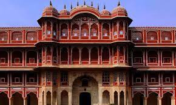
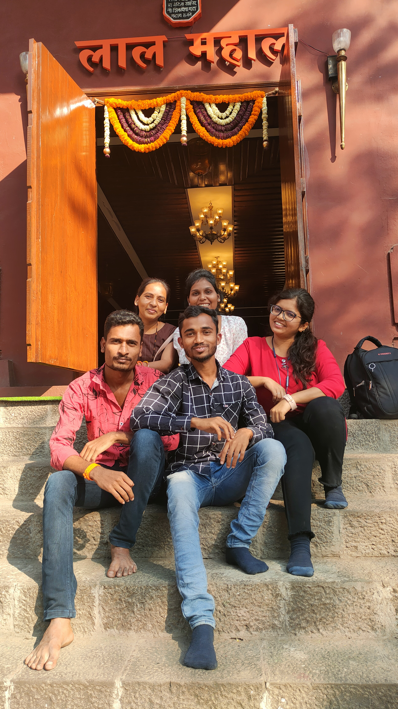
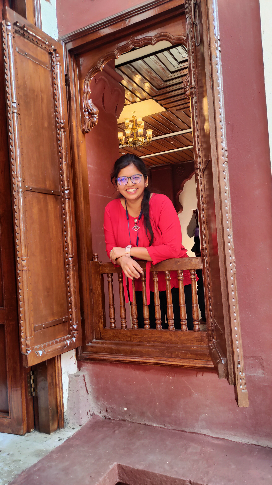

Laal Mahal

Introduction
Lal Mahal is one of the famous attractions and historical monument located at Pune. In this you will learn more about the Lal Mahal which is located near Shaniwar Wada in Pune city and is a famous historical place of attraction in Pune city.
History
In 1630, Shivaji's father Shahaji built the Lal Mahal for his family. Shivaji lived there until capturing his first fort. The current Lal Mahal in Pune is a reconstruction. It was intended to revitalize the city after destruction. The Lal Mahal became famous for Shivaji's encounter with Shaista Khan. In the late 17th century, it was ruined. Some Lal Mahal materials were used for luck in building Shaniwarwada. Lal Mahal hosted feasts and later houses were built on its land. Its exact original location is unclear, but it was near Shaniwarwada.


laal mahal today:
Lal Mahal today, is a small building that stands out owing to its red color but there isn’t much left to see here. I went in with a lot of curiosity but there was little that satiated it. As you enter the premises, you see some impressive looking statues of the Maratha guards – one on a horse like this one.and On entering the main courtyard, the first thing that I saw was on my left – a sculpture of Jijamata. Besides the same, there is a small model of the Raigad fort.
> Getting here:
-Lal Mahal is within walking distance from Shaniwar Wada in Pune, one of the mini metro cities of India. Pune can be accessed easily by road, rail and air from any city of India.
- You can reach Lal Mahal by using any of the local transport options – bus, cab or an auto.
> Travel Tips:
-There are no entry fees to see this place.
-Photography is permitted here.
-Remember to take off your footwear and store is at the shoe rack near the entrance. You need to enter the palace barefoot.